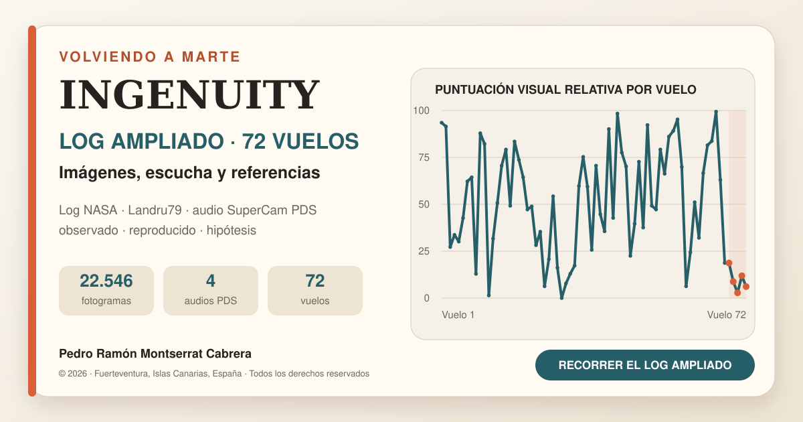

Ingenuity: log ampliado de 72 vuelos, imágenes y audio de Marte
Español · English · English documentation
Edición bilingüe v1.4.2 — 20 de septiembre de 2026
Esta edición incorpora la web, los controles, las fichas de los 72 vuelos, la documentación y los siete CSV en inglés. El selector «Español | English» conserva la dirección española actual. La guía de actualización está en ACTUALIZAR_GITHUB.md y las comprobaciones de esta entrega en REVISION_PUBLICACION.md. Los apartados siguientes conservan el historial de la revisión española.
Revisión del ensayo JPL y documentación — 19 de septiembre de 2026
Esta revisión incorpora en la web el vídeo oficial NASA Ingenuity Mars Helicopter Testing Media Reel de JPLraw, abierto directamente en el tramo del ensayo de cámara (2:28). El vídeo se integra desde la fuente oficial: requiere conexión a internet y evita redistribuir la grabación de pantalla utilizada durante el análisis.
También se han armonizado la web, las fórmulas, las fuentes, la nota de difusión, la cita y el aviso de materiales de terceros:
- 14 picos son los realmente medidos y empleados en el ajuste de
75,8813 Hz; - la figura A3 del paper muestra una peineta equivalente, con al menos 15 dientes visibles, pero no es necesariamente la misma toma, unidad ni separación numérica;
- la figura A2 documenta el montaje del ensayo en cámara y la figura A3 contiene el espectro;
75,8813 Hz × 30 = 2.276,44 rpm, frente a las2.277 rpmvisibles en el vídeo;- el valor de
2.529,1 rpmdel vuelo 4 se conserva como equivalente derivado de una ventana acústica, mientras que≈2.537 rpmse reserva para el régimen publicado por NASA; - 168 Hz se denomina segundo armónico (
2×BPF) para evitar la ambigüedad entre armónico y sobretono; - la licencia CC BY 4.0 se atribuye al artículo; el vídeo de JPL mantiene su crédito y condiciones propias.
Corrección de independencia entre explorador y mapa — 15 de septiembre de 2026
Descomprime el paquete completo y abre index.html. Conserva las carpetas junto al HTML. Para actualizar el repositorio existente, sustituye los archivos por el contenido de este paquete en la raíz; no subas solamente el ZIP. No hace falta crear otro repositorio ni cambiar su visibilidad.
- La ficha y el explorador principal comienzan en el vuelo 1; el índice del mapa también comienza en el vuelo 1, pero funciona de forma independiente.
- El índice sigue los fotogramas presentados cuando el navegador admite
requestVideoFrameCallback, con los eventos de reproducción y búsqueda como respaldo. - Durante un salto se evita que una actualización intermedia del reproductor sustituya la selección solicitada.
- Se ha eliminado el adelanto artificial de 0,05 segundos al decidir el vuelo activo.
- Seleccionar un vuelo desde los botones superiores, el desplegable, la gráfica o la tabla actualiza únicamente la imagen fija, la ficha y la puntuación del explorador principal.
- Sólo los 72 botones situados junto al vídeo hacen saltar y reproducir el mapa oficial desde la marca elegida.
- La reproducción y la barra del mapa actualizan únicamente su propio índice; ya no cambian el vuelo seleccionado, la imagen fija ni los valores del primer bloque.
- El índice del mapa desplaza su propio panel para mantener visible el vuelo activo, sin mover la página durante la reproducción.
Comprobaciones de esta versión: sintaxis JavaScript válida; 72 marcas conservadas (vuelo 1: 0,2 s; vuelo 72: 56,6 s); llamadas del explorador separadas de las llamadas del mapa; vídeo local íntegro de 69,1 s; cuatro audios locales íntegros de 167,03 s; estructura completa del paquete y prueba de integridad del ZIP. La validación anterior en Chromium confirmó la apertura directa y bajo una subruta equivalente a la del repositorio, los 72 botones, los seis filtros, la carga del vídeo y los cuatro audios, además de la adaptación a 390 px.
Estas pruebas verifican navegación y reproducción; no constituyen una nueva validación científica de los datos ni una prueba en todos los navegadores. Aquella revisión no modificó directamente GitHub. El 20 de septiembre se comprobó que los 82 archivos públicos de la edición bilingüe v1.4.1 coincidían con el paquete corregido. La presente v1.4.2 incorpora las correcciones posteriores y requiere subir sus archivos para actualizar la web.

© 2026 Pedro Ramón Montserrat Cabrera — Fuerteventura, Islas Canarias, España. Todos los derechos reservados. El repositorio es público para su consulta y cita con atribución, pero no concede una licencia de código abierto. La reproducción, redistribución, modificación o uso comercial de las aportaciones originales requiere autorización previa. Véanse
LICENSEyNOTICE.md.
Proyecto personal de Pedro Ramón Montserrat Cabrera construido a partir del registro oficial de vuelos de NASA, el mapa completo publicado por NASA/JPL-Caltech, un montaje cronológico de imágenes públicas elaborado por Jacint Roger (Landru79), un análisis exploratorio uniforme de referencias visuales y las grabaciones calibradas de SuperCam conservadas en el Planetary Data System.
La intención es crear un log del piloto ampliado y de acceso público: una cronología para avanzar y retroceder entre vuelos, imágenes, escucha, incidencias y análisis independiente. No es telemetría interna de Ingenuity ni sustituye la investigación de NASA/JPL.
La página es completamente estática: no necesita base de datos, instalación ni servidor. GitHub Pages puede publicarla gratuitamente.
Contenido del repositorio
index.html: web completa e interactiva.- Mapa oficial de la localización de los 72 vuelos, integrado como vídeo MP4 ligero y sincronizado únicamente con su índice propio para no alterar el explorador principal.
datos/ingenuity_72_vuelos.csv: tabla descargable de los 72 vuelos.datos/mapa_oficial_72_vuelos_tiempos.csv: las 72 marcas verificadas para saltar al rótulo de cada vuelo en la animación oficial.datos/audio_ingenuity_pds.csv: catálogo trazable de los WAV y etiquetas PDS usados.datos/comparacion_audio_jpl_perseverance.csv: resumen de frecuencia, régimen equivalente y duración tonal del ensayo JPL y los cuatro WAV PDS.datos/nulos_audio_comparados.csv: tiempos de los mínimos medidos en el ensayo y en el vuelo 5.datos/plantilla_revision_lomas.csv: protocolo de 72 filas para verificar, sin duplicar imágenes ni confundirlas con aterrizajes, la hipótesis publicada de las 31–32 lomas.datos/vuelos_alta_velocidad_hipotesis.csv: vuelos 62, 68 y 69 a 10 m/s, magnitudes calculadas y separación entre hechos oficiales, plausibilidad física y causalidad no demostrada.assets/audio/: previsualizaciones MP3 filtradas para facilitar la escucha.assets/video/ingenuity-72-flight-map-960x540.mp4: copia ligera del mapa oficial para que el índice funcione también al abririndex.htmldirectamente.- Ensayo de cámara de JPL: reproductor oficial incrustado desde JPLraw, abierto en 2:28; no se incluye una copia local de la grabación de pantalla.
assets/spectrograms/: comparaciones de 0–250 Hz de las cuatro sesiones SuperCam.assets/analisis/: contraste visual del vuelo 9, espectros normalizados y comparación de nulos.analisis/comparar_audio.py: genera las figuras de espectros y nulos desde los audios originales.assets/social-card.png: portada para LinkedIn y redes sociales.assets/social-card.svg: versión vectorial editable de la portada.assets/favicon.svg: icono de la página.FUENTES_Y_METODO.md: trazabilidad, método y límites.LEYENDA_FORMULAS_Y_CRITERIOS.md: guía completa para interpretar la gráfica, reproducir los cálculos documentados, comprender ΔRPM, evaluar la hipótesis de las lomas y distinguir las coincidencias y diferencias con la evitación de peligros de JPL.ANALISIS_HAZARD_AUDIO_JPL.md: contraste profundo entre el vídeo de evitación de peligros, el ensayo terrestre y los cuatro registros de Perseverance.CITATION.cff: cita normalizada para que GitHub ofrezca la opción Cite this repository a estudiantes e investigadores.DIFUSION_AEROESPACIAL.md: resumen bilingüe, texto para LinkedIn, afirmaciones seguras y secuencia de difusión.LICENSE: condiciones de uso de las aportaciones originales; todos los derechos reservados.NOTICE.md: autoría, cita recomendada y separación de materiales de terceros..nojekyll: evita que GitHub transforme los archivos.
Publicarlo gratis en GitHub Pages
1. Crear el repositorio
- Entra en GitHub e inicia sesión.
- Pulsa New repository.
- Escribe como nombre:
ingenuity-72-vuelos. - Selecciona Public.
- No marques ninguna opción adicional y pulsa Create repository.
2. Subir los archivos
- Dentro del repositorio, pulsa uploading an existing file o Add file → Upload files.
- Descomprime el paquete preparado.
- Arrastra el contenido de la carpeta, no la carpeta exterior.
index.htmldebe quedar en la raíz del repositorio. - En el cuadro inferior escribe:
Publicación inicial de la cronología de Ingenuity. - Pulsa Commit changes.
3. Activar GitHub Pages
- Abre Settings en el repositorio.
- En el menú izquierdo entra en Pages.
- En Build and deployment, elige Deploy from a branch.
- Selecciona la rama main y la carpeta /(root).
- Pulsa Save.
GitHub mostrará la dirección pública después de unos minutos: https://pedroramon-estudios.github.io/Ingenuity-72-vuelos/
4. Ajustar la tarjeta de LinkedIn
Antes de compartir la web, abre index.html dentro de GitHub, pulsa el lápiz de edición y sustituye las cuatro apariciones de:
https://pedroramon-estudios.github.io/Ingenuity-72-vuelos/
por la dirección real que GitHub te haya proporcionado. Guarda con Commit changes.
Este cambio permite que LinkedIn encuentre correctamente la portada de 1200 × 630 píxeles.
5. Comprobar la publicación
- Abre la dirección de GitHub Pages.
- Comprueba que puedes seleccionar vuelos, pulsar los puntos de la gráfica y filtrar la tabla.
- Elige un vuelo en el desplegable, los botones, la gráfica y la tabla del primer bloque: la imagen fija y la ficha deben cambiar, pero el mapa no debe reproducirse ni arrastrar esa selección.
- Pulsa varios números del índice situado junto al mapa y comprueba que el vídeo oficial salta a su rótulo y empieza a reproducirse dentro de la página.
- Mueve manualmente la barra de tiempo del mapa hacia delante y hacia atrás: sólo su índice debe actualizarse al vuelo mostrado; la imagen fija, la ficha y el selector principal deben permanecer en el vuelo elegido.
- Con conexión a internet, abre el ensayo JPL y comprueba que comienza en 2:28. El enlace directo situado debajo sirve como alternativa si el navegador bloquea el reproductor incrustado.
- Prueba los cuatro reproductores y abre al menos un enlace Descargar WAV PDS.
- Prueba también los catálogos CSV, incluida la tabla de marcas del mapa.
- Introduce la dirección en LinkedIn Post Inspector para actualizar y revisar la tarjeta antes de publicar.
Texto breve sugerido para LinkedIn
Después de recorrer por separado los sonidos, las sombras, los aterrizajes y las incidencias de Ingenuity, quería reunir todo en un único log ampliado y de acceso público.
Esta cronología interactiva combina el registro oficial y el mapa NASA/JPL de los 72 vuelos, el montaje visual de Landru79, un análisis exploratorio de las referencias visibles en Navcam y las grabaciones SuperCam que Perseverance hizo de los vuelos 4, 5, 6 y 8.
No representa la telemetría interna del helicóptero. Es una forma de recorrer toda la misión bajo un mismo criterio, comparar vuelos y distinguir entre observaciones, resultados reproducidos e hipótesis.
La web incorpora además una pregunta surgida de mis publicaciones anteriores: la recurrencia aparente de aterrizajes próximos a crestas, dunas o lomas en una muestra inicial de 31 imágenes. No se presenta como una preferencia ya demostrada, sino como una hipótesis abierta, acompañada ahora por un protocolo para revisarla vuelo a vuelo.
Añade también una nueva línea sobre los vuelos 62, 68 y 69, los únicos que alcanzaron 10 m/s. Los vuelos 68 y 69 fueron ensayos dinámicos
Sys-IDal final de la misión. El log pregunta si ese historial de carga merece examinarse como posible preacondicionamiento, pero deja claro que los datos públicos no demuestran fatiga previa ni sustituyen la explicación de JPL sobre la sobrecarga del vuelo 72.Explorar los 72 vuelos: (https://pedroramon-estudios.github.io/Ingenuity-72-vuelos/)
Audio: escucha y descarga
Los cuatro reproductores locales son MP3 derivados de los WAV calibrados p02: se aplicó un filtro de 60–220 Hz y normalización para hacer más cómoda la escucha. Estas copias no deben emplearse para medidas cuantitativas.
Cada tarjeta enlaza al WAV original del PDS —mono, 25 kHz y 167 segundos— y el archivo datos/audio_ingenuity_pds.csv conserva también la dirección de su etiqueta XML. El paper acústico advierte un desfase de decenas de segundos entre relojes; por eso la web no fuerza una sincronización exacta con las imágenes.
Ensayo terrestre de JPL: dos comprobaciones distintas
La web incorpora el vídeo oficial NASA Ingenuity Mars Helicopter Testing Media Reel. En la captura analizada se midieron 14 picos igualmente espaciados: el ajuste da 75,8813 Hz, equivalente a 2.276,44 rpm, en acuerdo con las 2.277 rpm mostradas en pantalla.
El apéndice 3 del artículo de Lorenz et al. proporciona una segunda referencia: la figura A2 muestra el montaje de vuelo estacionario en la cámara y la figura A3 presenta un peine armónico equivalente, cercano a 82 Hz y con al menos 15 dientes visibles. Esta coincidencia confirma la estructura física esperada de la misma arquitectura de rotor; no significa que ambas gráficas procedan de la misma toma o que deban coincidir píxel a píxel.
Navegación sincronizada del mapa
Los 72 rótulos Flight Number de la animación NASA/JPL se revisaron sobre el máster oficial a 10 fotogramas por segundo. El explorador principal y el mapa tienen ahora estados independientes. Los botones, la gráfica, el desplegable y la tabla del primer bloque cambian su imagen fija y su ficha sin iniciar ni mover el vídeo. Sólo el panel situado junto al mapa hace que el reproductor salte a la marca correspondiente y comience a reproducirse. Al avanzar o retroceder con la barra, se actualiza exclusivamente el índice del mapa. La tabla datos/mapa_oficial_72_vuelos_tiempos.csv hace auditable esa relación con una precisión de muestreo de ±0,1 s.
Estas marcas sólo sirven para navegar por la animación. No se interpretan como hora de despegue, duración del vuelo, coordenadas ni telemetría de Ingenuity. El vídeo UHD de 639,35 MB no se redistribuye; el repositorio incorpora una copia ligera de 960×540 para la navegación interactiva.
El índice del mapa funciona en ambos sentidos sin depender de la API de YouTube: al elegir uno de sus vuelos, el vídeo local salta a la marca; al mover la barra, se actualiza automáticamente ese mismo índice. La selección analítica del primer bloque permanece quieta para poder estudiar sus valores. Puede comprobarse abriendo index.html directamente en el navegador y funcionará del mismo modo cuando se publique en GitHub Pages.
Actualizaciones posteriores
Para publicar una versión nueva sólo hay que editar o volver a subir los archivos y confirmar los cambios. GitHub Pages actualizará automáticamente la web sin cambiar su dirección.
Atribución
- Imágenes y datos de misión: NASA/JPL-Caltech y equipos correspondientes.
- Mapa completo de los 72 vuelos: NASA/JPL-Caltech.
- Registro oficial: NASA Science, misión Ingenuity.
- Montaje cronológico de imágenes públicas: Jacint Roger (Landru79).
- Análisis, selección y relato: Pedro Ramón Montserrat Cabrera, Fuerteventura, Islas Canarias, España.
Proyecto independiente de divulgación y consulta pública, sin afiliación ni aval de NASA/JPL. Los materiales de terceros conservan sus condiciones de uso originales.
Derechos y cita
© 2026 Pedro Ramón Montserrat Cabrera — Fuerteventura, Islas Canarias, España. Todos los derechos reservados. La publicación pública no transfiere la titularidad ni convierte las aportaciones originales en código abierto. Consulte las condiciones completas en LICENSE y el desglose de autorías en NOTICE.md.
Cita recomendada:
Montserrat Cabrera, Pedro Ramón (2026). Ingenuity: log ampliado de 72 vuelos, imágenes y audio de Marte. Fuerteventura, Islas Canarias, España. https://github.com/pedroramon-estudios/Ingenuity-72-vuelos
Correcciones de la edición 1.4.2
Se traducen también los rótulos internos de las dos gráficas acústicas; se conserva la figura inglesa corregida del vuelo 9. La documentación española dispone ahora de páginas HTML con fórmulas legibles. Ambos idiomas ya están publicados en la edición anterior; este paquete actualiza sus archivos. Véanse las instrucciones de reproducción y sus límites.
© 2026 Pedro Ramón Montserrat Cabrera · Fuerteventura, Islas Canarias, España.